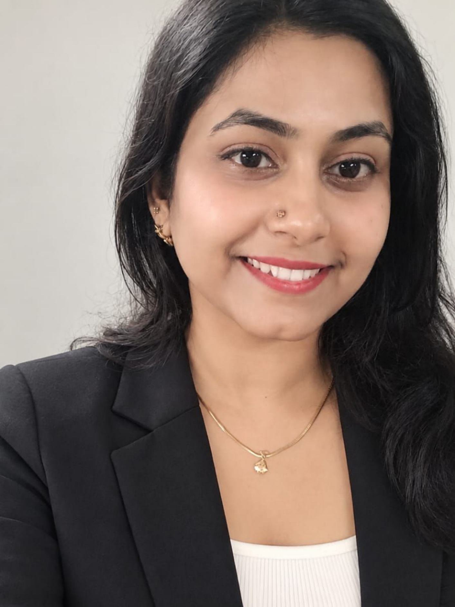

Cloud & DevOps
Engineer (CSRE)
Cloud infrastructure engineer with 4.5+ years of experience across GCP, AWS and Azure — focused on reliable infrastructure, cloud migrations, Kubernetes, Terraform, automation, observability and production reliability.

Engineering cloud environments that teams can rely on.
My work combines infrastructure management, reliability engineering, automation and practical production troubleshooting.
Cloud & DevOps Engineer with 4.5+ years of experience across GCP, AWS and Azure, with hands-on experience in cloud infrastructure, Kubernetes, Terraform, CI/CD, cloud migrations, monitoring, automation, security, disaster recovery and reliability engineering.
At Searce, I have worked with client production environments where availability, operational stability, troubleshooting and controlled infrastructure changes are critical. My work includes infrastructure assessments, workload migration, monitoring and alerting, Linux/Windows environments, Kubernetes workloads, infrastructure as code, DR and security controls.
I focus on understanding the infrastructure problem, making the right change, validating the outcome and documenting the solution so the environment becomes more reliable and easier to operate.
My cloud & engineering toolkit
A practical stack covering infrastructure, reliability, automation, networking, security and observability.
Cloud Platforms
GCP, AWS, Microsoft Azure
GCP
Compute Engine, Cloud Run, Cloud Load Balancing, Cloud DNS, Cloud Storage, Cloud CDN, Cloud Monitoring, Cloud Logging, Pub/Sub, Cloud Functions, IAM, Cloud Billing, Backup & DR
AWS
EC2, Elastic Load Balancing, IAM, S3, CloudWatch
Networking
VPC, Firewall Rules, VPC Peering, Cloud Router, Interconnect, VPN, Routing, TLS/SSL Certificate Management
Kubernetes & Containers
Docker, Kubernetes, Deployments, StatefulSets, workload troubleshooting and rollbacks
IaC & CI/CD
Terraform, GitHub Actions and CI/CD workflows
Monitoring & Observability
Google Cloud Monitoring, Cloud Logging, AWS CloudWatch, Grafana, Stackdriver
Security & Reliability
IAM, Cloud Armor, Security Command Center, Organization Policies, SRE Practices, SLA/SLO, Incident Management, RCA, DR, Cost Optimization
Systems & Scripting
Linux, Windows, VM-based Infrastructure, Python, Bash, Shell Scripting
Operations
Incident, Change and Problem Management; production troubleshooting and cross-functional collaboration
What I have worked on
Cloud Reliability Engineer · Searce
Pune, Maharashtra
- Managed and improved GCP and AWS cloud infrastructure for client environments, supporting scalability, availability, reliability and operational stability.
- Executed workload migrations through source discovery, infrastructure assessment, target preparation, readiness checks, migration monitoring, failure triage, validation and cutover.
- Managed Linux and Windows systems through migration preparation, patching, maintenance, change procedures and production operations.
- Implemented monitoring, alerting and logging to improve visibility into infrastructure health, application performance and critical production events.
- Managed Kubernetes deployments and updates, including Deployment and StatefulSet workloads, troubleshooting and rollbacks.
- Worked with Terraform and GitHub Actions for infrastructure as code and CI/CD workflows.
- Supported disaster recovery and business continuity activities involving infrastructure reconstruction, connectivity, monitoring, validation and recovery readiness.
- Performed infrastructure assessments, utilization analysis and resource right-sizing to identify performance and cost-optimization opportunities.
- Worked with IAM, service accounts, least-privilege practices, firewall rules, Cloud Armor, SCC and Organization Policies for cloud security.
- Handled production incidents, troubleshooting, root cause analysis, controlled changes and cross-functional coordination while following SRE practices and SLA/SLO requirements.
Projects & outcomes
Examples of work where infrastructure engineering translated into reliability, operational or cost benefits.
GCP Compute Engine Auto-Restart Automation
Built an automated resource-management solution using Cloud Monitoring, Alerting, Pub/Sub, Cloud Functions, Compute Engine and IAM.
GCP Cost Optimization
Analyzed infrastructure utilization trends and performed resource right-sizing activities to identify underutilized resources and optimize spend.
Disaster Recovery Implementation
Supported production environment reconstruction and recovery readiness across Compute Engine, VPC, Load Balancing, Firewall Rules, Cloud Router, VPC Peering, Interconnect, monitoring and SSL certificates.
Cloud Workload Migration
Supported discovery, readiness assessment, target preparation, migration execution, monitoring, failure triage, post-migration validation and cutover.
Kubernetes Container Management
Managed containerized workloads including Deployments and StatefulSets, updates, rollbacks and production troubleshooting.
Beyond managing infrastructure.
I focus on the business outcome behind the infrastructure change — keeping production reliable, reducing avoidable cost, improving operational visibility and making repeatable work easier through automation.
Google Cloud certified
Kavikulguru Institute of Technology and Science, Ramtek · 2021
Let’s build reliable cloud infrastructure.
I’m an Immediate Joiner and open to Cloud Engineer, Cloud & DevOps Engineer, Cloud Reliability Engineer, SRE and Platform Engineer opportunities.